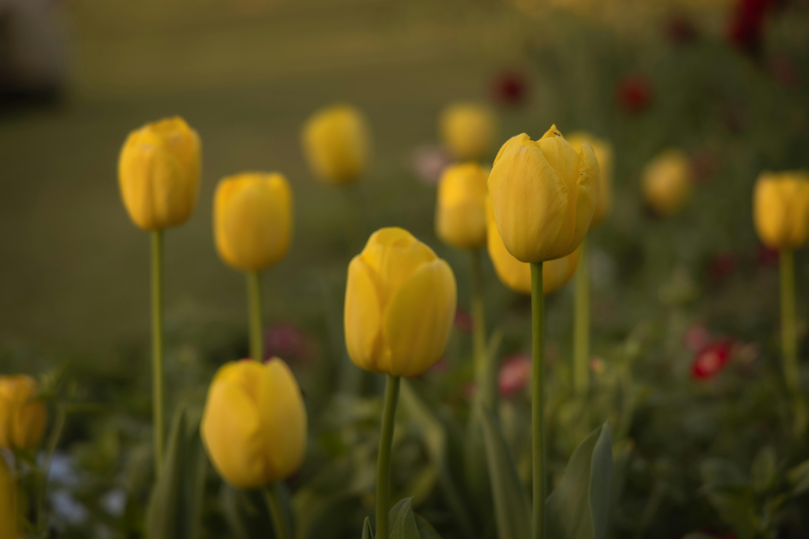
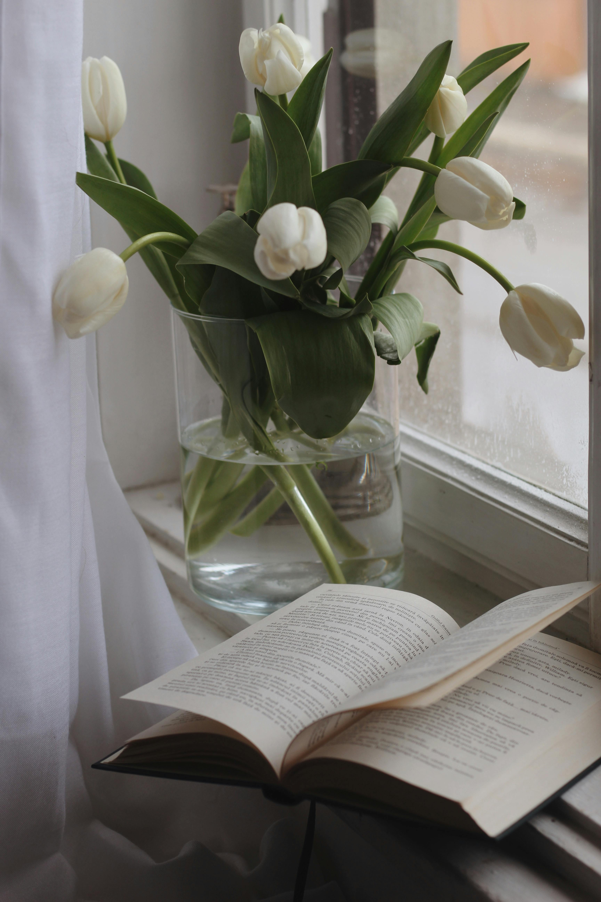
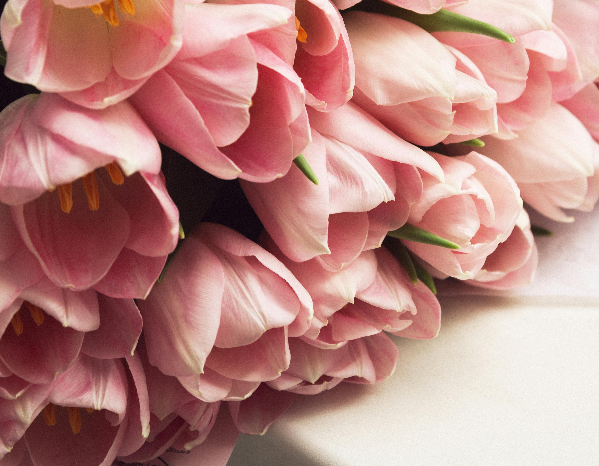

Tulips are native to Central Asia, with a history that stretches back thousands of years. The flower was first cultivated in the mountainous regions of modern-day Turkey, Kazakhstan, and parts of Iran. They thrive in temperate climates, where they experience a distinct change in seasons, such as the cool winters and warm springs found in these regions. Historically, tulips were not well known outside of their native regions until the 16th century, when they were introduced to Europe, specifically the Netherlands, where they became a symbol of wealth and luxury.
Today, tulips are most famously associated with the Netherlands, which has become the global center for tulip cultivation. The Dutch climate—cool, with a balance of wet winters and dry, sunny springs—is ideal for tulips. The country has been a major exporter of tulip bulbs for centuries, and tulips are now an iconic part of Dutch culture, especially during the springtime, when fields of blooming tulips create stunning landscapes.
Tulips are grown in many other regions as well, especially in countries with similar climates, such as parts of the United States (especially in the Pacific Northwest), Canada, and other European countries like France and Belgium. In addition to being grown in fields, tulips are also cultivated in greenhouses for year-round availability. They thrive in well-drained soil and are typically planted in the fall, allowing the bulbs to establish roots before the colder winter months. The bright, colorful blooms appear in early spring, signaling the end of winter and the start of warmer weather.
Tulips are primarily known for their beauty and are used as ornamental flowers in gardens, parks, and floral arrangements. Their striking, vibrant blooms make them a favorite in spring gardens around the world. Tulips come in a wide range of colors, from rich reds and yellows to soft pastels, making them versatile for creating eye-catching landscapes and decorative displays. They are especially popular for spring festivals and events, such as the famous Tulip Festival in the Netherlands, where millions of tulips are on display in vibrant fields. In addition to being planted in outdoor gardens, tulips are commonly used as potted plants and indoor decorations, bringing color and life to homes and offices during the colder months..
In the world of floristry, tulips hold great value for their beauty and symbolic meanings. They are often used in bouquets and floral arrangements for special occasions, such as weddings, birthdays, and anniversaries. Tulips symbolize different sentiments depending on their color; for example, red tulips are associated with love and passion, while yellow tulips traditionally represent cheerful thoughts and friendship. Their graceful form and variety of hues make them an ideal choice for conveying emotions through flowers. In floral design, they are frequently paired with other spring flowers like daffodils and hyacinths, creating fresh and vibrant arrangements.
Beyond their decorative uses, tulips also have a historical connection to the economy. During the 17th century, the Netherlands experienced "tulip mania," a period of speculative trading where tulip bulbs became extremely valuable. At the height of tulip mania, some rare bulbs were sold for the equivalent of a house in Amsterdam. Though this speculative frenzy eventually collapsed, it highlighted the cultural and economic significance of tulips in certain regions. In modern times, tulips are still a major agricultural product, particularly in countries like the Netherlands, where they are exported worldwide as bulbs for cultivation in other countries. While tulips are not generally used in cooking or as a direct source of material goods, they hold cultural and economic importance as symbols of prosperity and springtime renewal. They are also sometimes seen in art, literature, and even medicine in some cultures, though these uses are less widespread. Their continued cultivation and global appreciation underscore their role as one of the most beloved flowers in the world.
Wreathe of lies Adorn my body with your flowers, Your flowers of lies—warm and afresh. Pin them hard, Till my skin becomes rosy, And cheeks a little lake, For the flowers must not dry. Pin them with needles, Close to my chest, Where my treasure lives— Alone and alive. What have I become, But a wreath of your lies. The flowers withered
— from Application for Release from the Dream